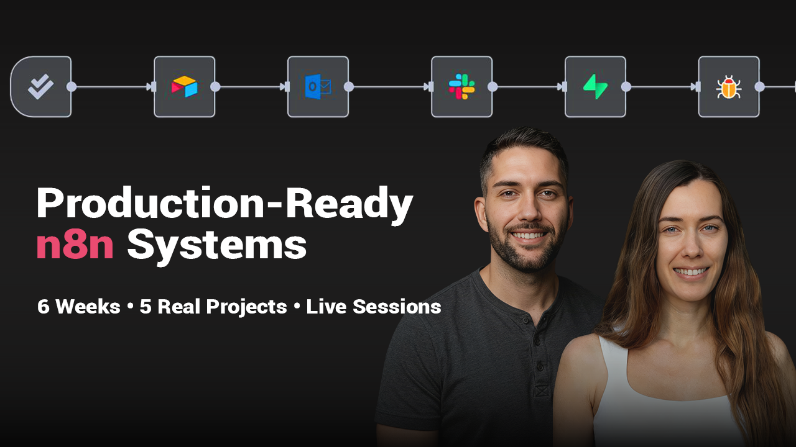

Batch 1 Results
16
Students graduated
100%
Built production-ready workflows
Batch 2
Coming — get on the waitlist


Cohort Program — Batch 2 Waitlist Open
A live cohort program for people who want to become AI Operators — builders who ship production-grade automation systems, not just interesting prototypes.
Batch 1 graduated 16 students. Batch 2 dates TBD. Join the waitlist now.
Join the Waitlist
Most automation courses teach you how tools work. This cohort teaches you how to think like a builder.
You'll go from understanding n8n to designing systems that handle real workloads — workflows that include error handling, production deployment, monitoring, and the kind of architecture decisions that separate a toy from something you'd trust to run unsupervised.
The cohort is live and cohort-based: you'll work alongside other builders, get direct feedback on your systems, and go through the process of thinking through a real problem from task analysis to deployment.
This isn't a course you watch. It's a program you build through.
You've built workflows before — maybe in n8n, Make, Zapier, or code — and you want to go further than what tutorials cover.
You identify as a builder. You don't just want automation for your business — building is part of how you think about your career and identity.
You're digitally native and technically comfortable — you've shipped things, you can read docs, you debug by thinking, not by panic-Googling.
You want to become an AI Operator: someone who designs and deploys AI-powered systems as a core professional skill.
You're willing to do the work — build, break, debug, rebuild. You accept that building is part of learning, not a detour from it.
Batch 1 included marketers who understood they were builders, product managers who decided they wanted to build, and engineers who wanted to add AI to their stack. What they all had in common: they showed up to build, not to watch.
You want a project built for you. This cohort teaches you to build — it doesn't build on your behalf.
You're an entrepreneur primarily looking for done-for-you automation or a subcontractor to hand work off to. That's a different service — not this.
You've never used an automation tool before and want to start from zero. The n8n Fundamentals course is a better starting point — come back for the cohort when you're ready.
You want a passive learning experience. The cohort is active — you build, you get feedback, you iterate. Passivity doesn't survive it.
We've learned from Batch 1 that the students who struggled most weren't the least technical — they were the ones who expected to receive automation rather than build it. That's why this page is honest about the fit. Wrong students don't succeed, and we'd rather have 12 right students than 30 wrong ones.
Break down real-world problems into automatable components. Learn to think in systems before you open n8n.
Design n8n workflows that can handle scale, edge cases, and the unexpected — not just the happy path.
Build agents that reason, use tools, and make decisions — the kind of systems that go beyond simple trigger/action flows.
Make workflows that don't silently break. Build in monitoring, alerts, and recovery paths from the start.
Get your workflows out of test mode and into the real world — with the stability and observability that requires.
Real-time builds, peer feedback, and direct access to Nadia and co-instructors throughout the program.
AI Educator & Automation Consultant — Vienna, Austria
10 years as a backend developer. Now an AI automation educator who has taught workshops to 1,000+ attendees, worked with 20+ consulting clients, and hosted a DataCamp code-along with 1,000+ live participants.
The cohort is co-led with a technical co-instructor to ensure every student gets real feedback on their actual builds — not generic advice.
Nadia's teaching philosophy: you learn by building things that break, debugging them, and building them better. The cohort is designed around that loop.
Recorded at the Batch 1 graduation session — students share what they built and what changed.
Dates and spots for Batch 2 are not yet announced. Join the waitlist and you'll be the first to know — before it opens publicly.
No spam. One email when Batch 2 opens.
By submitting, you agree to the Datenschutzerklärung. Your data is used only to notify you about the cohort.